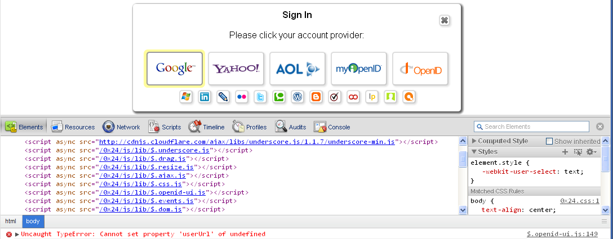
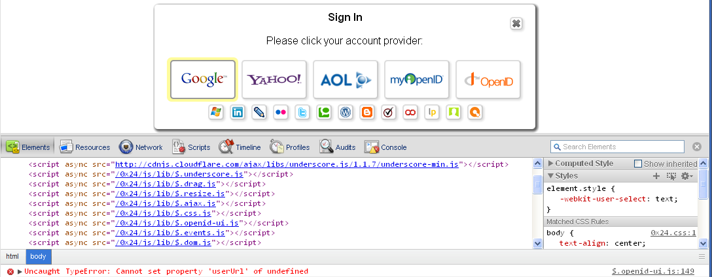

LABjs
LABjs does a good job of making sure resources are only loaded once. However, it does not ensure that modules are loaded and executed in the correct order.

LABjs does a good job of making sure resources are only loaded once. However, it does not ensure that modules are loaded and executed in the correct order.
